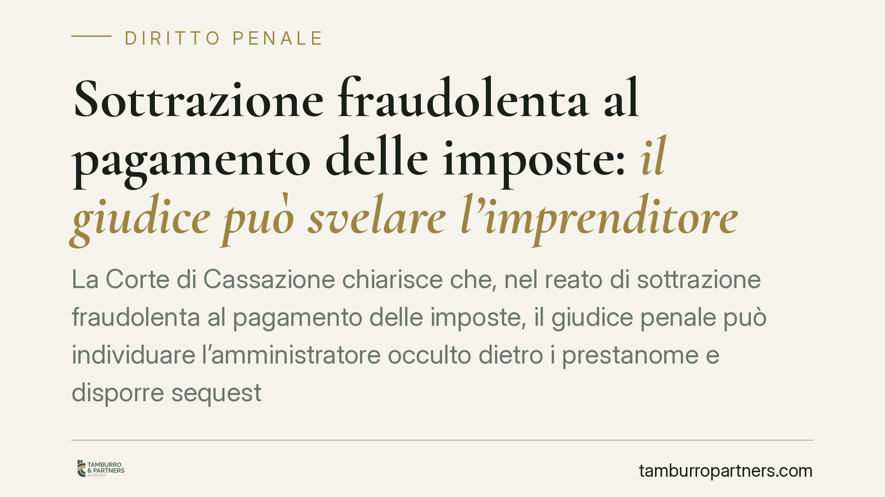

Sottrazione fraudolenta al pagamento delle imposte: il giudice può svelare l'imprenditore occulto
La Corte di Cassazione chiarisce che, nel reato di sottrazione fraudolenta al pagamento delle imposte, il giudice penale può individuare l'amministratore occulto dietro i prestanome e disporre sequestri anche senza un accertamento formale del Fisco. Una pronuncia che colpisce lo schema evasivo 'apri e chiudi' e ridisegna il perimetro delle responsabilità.

Il fatto
La Corte di Cassazione è tornata sul reato di sottrazione fraudolenta al pagamento delle imposte, previsto dall'articolo 11 del D.lgs. 74/2000. Il punto deciso è duplice: da un lato la possibilità per il giudice penale di individuare l'amministratore di fatto - l'imprenditore che gestisce realmente l'attività nascondendosi dietro prestanome - dall'altro la non necessità di un previo accertamento tributario per procedere al sequestro.
Lo scenario tipico è quello del cosiddetto schema 'apri e chiudi': si costituisce una società, la si svuota degli asset quando il debito fiscale diventa consistente, e si lascia il prestanome a rispondere formalmente mentre il regista resta nell'ombra.
Inquadramento normativo
L'articolo 11 del D.lgs. 74/2000 punisce chi, al fine di sottrarsi al pagamento di imposte sui redditi o sul valore aggiunto, di sanzioni e interessi, per un ammontare superiore a cinquantamila euro, aliena simulatamente o compie altri atti fraudolenti sui propri o altrui beni idonei a rendere inefficace la procedura di riscossione coattiva.
È un reato di pericolo: non serve che la riscossione sia effettivamente fallita, basta che gli atti siano idonei a comprometterla. Questo dato è decisivo. Proprio perché la condotta punita è l'atto fraudolento in sé, la Cassazione esclude che occorra una previa cartella o un accertamento definitivo dell'Agenzia delle Entrate.
In altri termini, non esiste alcuna 'pregiudiziale tributaria': il giudice penale può valutare in autonomia l'esistenza del debito e l'idoneità degli atti dispositivi, senza attendere la conclusione dell'iter amministrativo. Sul piano soggettivo, la responsabilità segue chi gestisce in concreto, non chi compare nelle visure.
Implicazioni pratiche
La pronuncia sposta l'attenzione dalla forma alla sostanza. Chi ricopre una carica solo sulla carta - il classico prestanome - non è automaticamente al riparo, ma soprattutto non protegge il dominus occulto.
Per l'amministratore di fatto il messaggio è netto: la schermatura societaria non impedisce né l'imputazione né il sequestro preventivo dei beni, anche di quelli formalmente intestati ad altri, quando il giudice ricostruisce la gestione effettiva.
Per il prestanome il rischio è concreto e spesso sottovalutato. Accettare una carica nominale, firmare atti, prestare il proprio nome espone a responsabilità penale diretta e al coinvolgimento patrimoniale. La convinzione di essere un soggetto 'comodo' e irraggiungibile è priva di fondamento.
Per le operazioni straordinarie - cessioni di ramo d'azienda, scissioni, trasferimenti di immobili - cresce la soglia di attenzione. Operazioni lecite nella forma possono essere lette come atti fraudolenti se collocate in un contesto di depauperamento in presenza di un debito fiscale rilevante.
Cosa fare in concreto
- Verificate la coerenza tra carica e gestione: se la titolarità formale non corrisponde alla gestione reale, chiarite subito la posizione, per evitare attribuzioni di responsabilità indesiderate.
- Non accettate incarichi nominali: rifiutate cariche o intestazioni fiduciarie prive di effettivo potere gestorio; la qualifica formale non limita le conseguenze penali.
- Documentate le operazioni straordinarie: conservate traccia delle ragioni economiche di cessioni e trasferimenti, soprattutto in presenza di esposizioni fiscali significative.
- Monitorate la posizione debitoria: quando il debito verso l'Erario supera soglie rilevanti, consigliamo di valutare ogni atto dispositivo con un professionista, prima di compierlo.
- Agite tempestivamente in caso di sequestro: il sequestro preventivo può colpire anche beni intestati a terzi; una difesa precoce è essenziale per contestarne i presupposti.
In sintesi
La decisione rafforza un principio già in formazione nella giurisprudenza: il diritto penale tributario guarda alla realtà economica, non alle intestazioni di comodo. L'assenza di un accertamento definitivo del Fisco non è più un ostacolo all'azione penale e cautelare. Chi gestisce risponde; chi presta il nome non è protetto.
---
*Contributo informativo a cura di Tamburro & Partners - Avv. Giuseppe Tamburro. Non costituisce parere legale.*
Ogni condominio ha una storia a sé.
Se gestisci un'amministrazione e vuoi un confronto su una specifica questione condominiale, scrivi allo studio. Ti rispondiamo entro un giorno lavorativo.